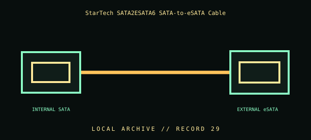

[ INDIVIDUAL COMPONENT // CABLES & ADAPTERS ]
StarTech SATA2ESATA6 SATA-to-eSATA Cable
StarTech.com SATA2ESATA6 shielded eSATA-to-SATA cable. This entry identifies the documented model and does not claim that visually similar products share its pinout, protocol, capability, or host compatibility.

COMPATIBILITY WARNING: Verify the exact product model, host/device role, signal protocol, electrical requirements, and manual before connection. Connector fit alone does not prove compatibility.
Specifications
| Catalog subcategory | Data, peripheral, and high-speed cables |
|---|---|
| Catalog identity | StarTech.com SATA2ESATA6 shielded eSATA-to-SATA cable |
| Verified protocol / model information | StarTech describes SATA2ESATA6 as a shielded cable connecting an internal SATA port to an eSATA device; listed model length is 6 ft. SATA III 6 Gbit/s is the interface ceiling for compatible SATA devices, not guaranteed throughput on every host/cable path. |
| Connector ends | INTERNAL SATA → EXTERNAL eSATA; diagram is schematic, not a pinout map. |
Physical & electrical compatibility
An eSATA link alone does not provide drive power. The internal SATA host port must support the drive and intended hot-plug behavior; use a separate documented power source. Do not mate an eSATA connector to an internal SATA header by force, and do not mistake this for USB or a SATA power lead.
Archival & handling notes
Label the 6 ft cable and both ends as internal SATA/eSATA. Preserve any shielding and strain relief, inspect the external latch/contact area, and note whether an enclosure required separate power.
Record provenance, condition, label photographs, exact full part number/revision, host system, and any test method/result. Preserve packaging and source documents with the cable when available.
Manufacturer & standards references
- StarTech — SATA2ESATA6 shielded SATA-to-eSATA cableManufacturer model, connection purpose, shielding, and length information.
- SATA-IO — Serial ATA specificationsPrimary interface standards information; confirm host/device generation and power separately.
Manufacturer documentation applies to the cited model; standards references describe the protocol family. Where product revisions or device support vary, the exact manufacturer manual and host documentation take precedence.